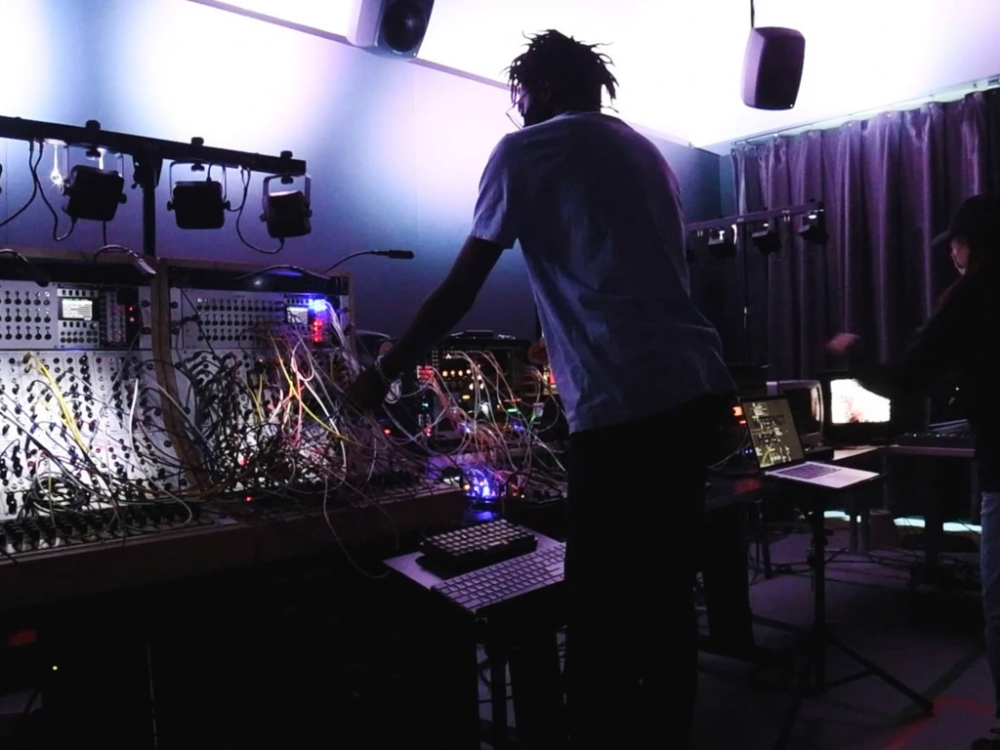
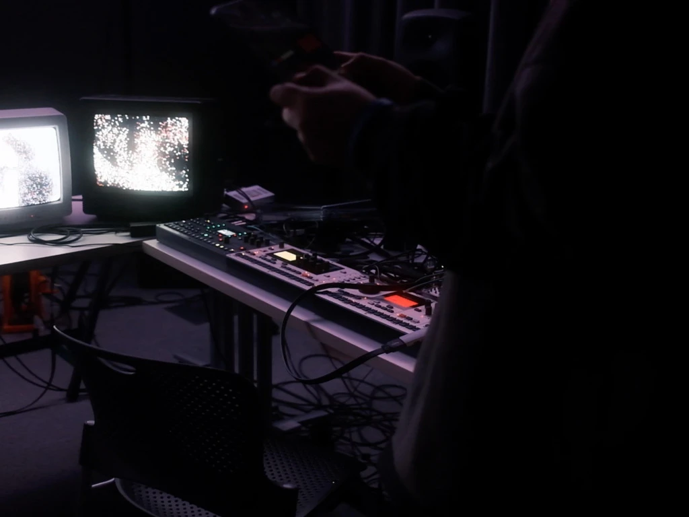

Of Sound and Vision
Performance for Of Sound and Vision Wintersession Course in collaboration with Haram Lee

Using the Serge Modular Synthesizer, My personal Eurorack Modular Synth, Max MSP, Reaper, The 25.4 Speaker Array and the Elektron Monomachine, Machinedrum and Octatrack
